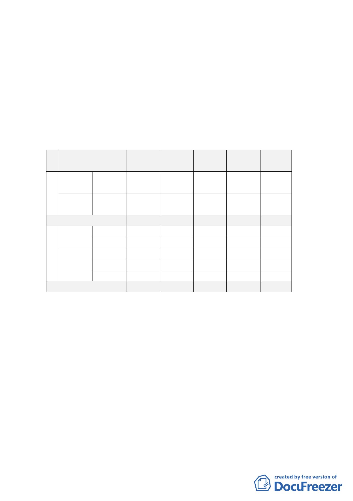

變更第三種住宅區為廣場
2. Ｂ區
（1） 變更部分第三種住宅區為廣場、人行步道、道路及
第三種住宅區（特），變更部分道路為人行步道、
第三種住宅區
（2） 變更都市計畫，將四宗基地劃為一宗基地，公共設
施面積維持不變。
（3） 土地使用面積分配情形詳如下表
位 使用
原計畫面 佔原計畫 變更後面 增減面積 佔變更後
置 分區
積(公頃) 面積（％） 積(公頃) (公頃) 面積（％）
住宅
Ａ 用地
住三
0.0772
100
0 -0.0772
0
區
公共設
施用地
廣場
0 0 0.0772 +0.0772 100
合計
0.0772 100 0.0772
0 100
住宅用 住三
1.0288 82.05
0 -1.0288
0
Ｂ
區
地住三
公共設
施用地
住三（特）
0
廣場
0
道路
0.2251
人行步道
0
0
0
17.95
0
1.0288 +1.0288
0.0317 +0.0317
0.0462 -0.1789
0.1472 +0.1472
82.05
2.53
3.68
11.74
合計
1.2539 100 1.2539
0 100
（二） 土地使用分區管制
第三種住宅區（特）建蔽率為60％，其中建築物之建蔽率
不得超過45％，另15％為可通風採光之頂棚，容積率為225
％。
（三） 第三種住宅區（特）之地下一層、地面層及二層之使用除
第7、12、13、41、42、44、及51組維持附條件使用外，
於原第三種住宅區附條件允許使用組別得直接允許使
用，惟不得超過總樓地板面積之三分之一。
（四） 地下開發規模以60％為原則。
四、 全案係市府98年7月31日府都規字第09834319500號公告公
開展覽並函送到會。
-2-